UDN
Search public documentation:
AppleiOSProvisioningPortalCH
English Translation
日本語訳
한국어
Interested in the Unreal Engine?
Visit the Unreal Technology site.
Looking for jobs and company info?
Check out the Epic games site.
Questions about support via UDN?
Contact the UDN Staff
日本語訳
한국어
Interested in the Unreal Engine?
Visit the Unreal Technology site.
Looking for jobs and company info?
Check out the Epic games site.
Questions about support via UDN?
Contact the UDN Staff
移动设备主页 > iOS Provisioning概述 > iOS Provisioning Portal概述
iOS Provisioning Portal概述
概述
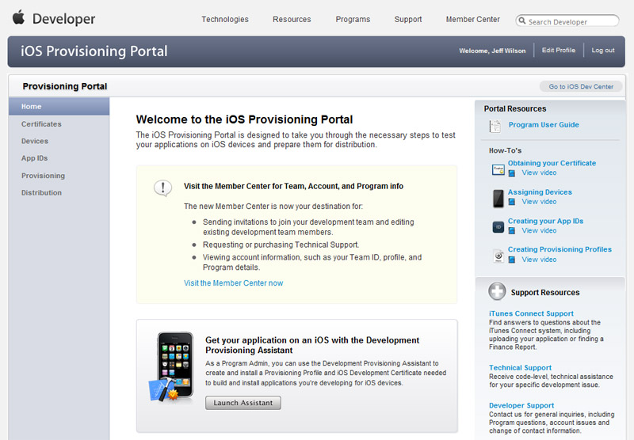
这里，您可以添加多个设备，设置明确的包标识符、修改您的provisioning profile等。这部分将详细介绍一些开发人员使用Unreal创建iOS游戏所应用的通用处理。证书
开发
请求获得开发者证书
为了创建一个新的开发证书，您需要一个证书请求文件(.csr)。-
要想请求获得一个新的开发者证书，点击 Certificates(证书) 主页的 Development(开发) 选卡上的按钮。这就将把您带到 create iOS Development Certificate(创建iOS开发证书) 页面。
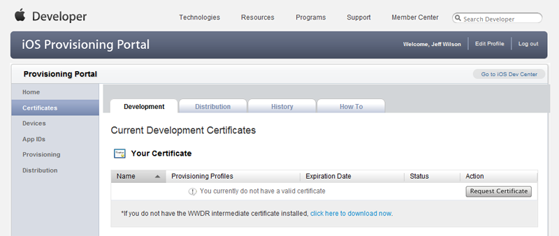
-
使用文件输入域找到您的证书请求文件(.csr)。然后点击
 按钮来提交请求。现在您应该在 Certificates(证书) 主页的 Development(开发) 选卡下列出了未处理的证书请求。
按钮来提交请求。现在您应该在 Certificates(证书) 主页的 Development(开发) 选卡下列出了未处理的证书请求。
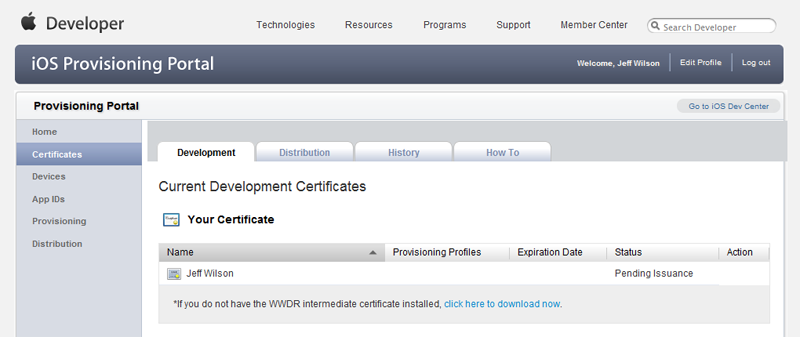
-
点击 Certificates(证书) 链接来重新加载 Certificates(证书) 页面的 Development(开发) 选卡。现在证书应该显示为 Issued(已发行) 状态。

发布
请求获得发布证书
为了创建一个新的发布证书，您需要一个证书请求文件(.csr)。-
要想请求获得一个新的发布证书，点击 Certificates(证书) 主页的 Distribution(发布) 选卡上的按钮。这就将把您带到 create iOS Distribution Certificate(创建iOS发布证书) 页面。

-
使用文件输入域找到您的证书请求文件(.csr)。然后点击按钮来提交请求。现在您应该发现在 Certificates(证书) 主页的 Distribution(发布) 选卡下已经列出了未处理的证书请求。

-
点击 Certificates(证书) 链接来重新加载 Certificates(证书) 页面的 Distribution(发布) 选卡。现在证书应该显示为 Issued(已发行) 状态。

设备
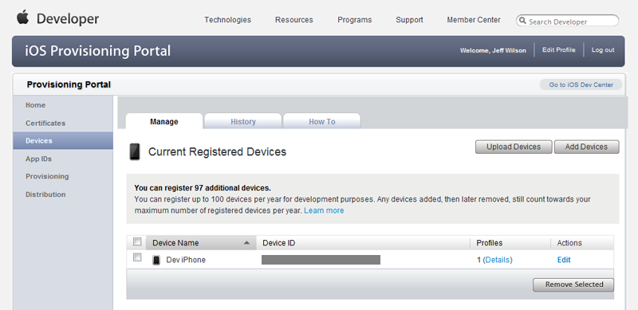
添加设备
添加额外的设备可以使您把多个设备分配给您的provisioning profile。这使得您可以在多个设备上进行测试，比如，在iPad、iPhone和iPod Touch上，从而保证它可以在所有需要的平台上运行。-
要想添加新设备，请点击 Devices(设备) 主页上的 按钮。这将把您带到 Add Devices(添加设备) 页面。

-
在 Add Devices(添加设备) 页面，输入以下信息：
- Device Name(设备名称) - 这仅会显示用于标识特定设备的名称。
- Device ID - 这是您的iOS设备的唯一id。有一些关于通过Xcode和Mac定位id的方法的介绍，但是另一个找到Device ID(设备ID)地方法是使用 App Store中的 iDevice Info(我的设备的信息) 应用程序。该应用程序甚至会发送邮件告诉您该id，以便您可以很容易复制并把它粘帖到相应的域。

-
点击 按钮来添加新设备。现在， 您会发现 Devices(设备) 主页上列出了新设备和以前添加的设备。
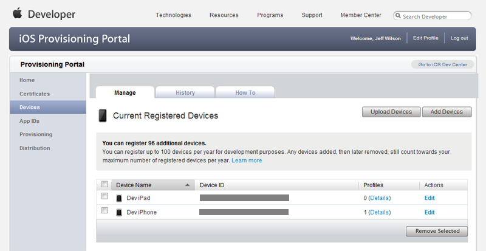
App IDs(应用程序IDs)
创建App IDs
手动地创建App IDs使您可以使用明确的包标识符设置App ID，这对于使用Game Center、In App Purchases及Apple Push Notification 服务进行通信来说是必须。-
要想添加新 App ID，请点击 App IDs 主页上的
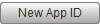
按钮。这将把您带到 Create App ID(创建应用程序ID) 页面。如果您先前已经创建了App IDs，那么它们将显示在这个页面上。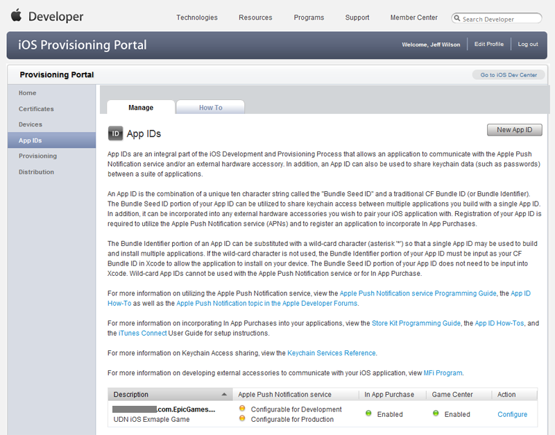
-
输入以下信息：
- Description(描述 - 这是在 iOS Provisioning Portal 中用于标识 App ID的显示名称。
- Bundle Seed ID - 这是自动创建的唯一标识符。您可以通过选择 Generate New(生成新id) 来生成新的ID。
- Bundle Identifier - 这是新App ID的唯一标识符。这可以是一个通配符(&42;)，但是如果您想使用 Game Center、In App Purchases或Apple Push Notification 服务，那么你必须设置它为明确的值。精确包标识符的推荐格式是反向域名格式的字符串。(示例:
com.EpicGames.UDNiOSGame)
-
点击 按钮来创建新的App ID。现在，您应该发现新的App ID已经列在了 App IDs 主页中。
Provisioning(服务提供)
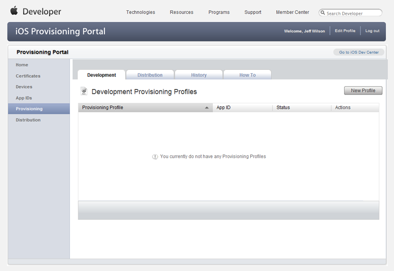
开发
创建Development Profiles
在 Development(开发) 选卡的 Provisioning 部分中可以直接创建新的development provisioning profiles(开发服务提供概述)。-
要想创建新的开发服务提供概述，点击 Provisioning(服务提供) 主页的 Development(开发) 选卡上的按钮。这就将把您带到 Create iOS Development Provisioning Profile(创建iOS开发服务提供概述) 页面。

-
填写profile(概述)信息：
- Profile Name(概述名称) - 用于在 iOS Provisioning Portal 中标识profile 的显示名称。
- Certificates(证书) - 选中证书旁边的复选框来将该证书和这个profile相关联。
- App ID - 从您的现有App IDs中选择一个将其和这个profile相关联。
- Devices(设备) -选中应该和这个profile相关联的所有设备旁边的复选框。

-
点击按钮来提交新的profile。这将把您带回到 Provisioning(服务提供) 主页的 Development(开发) 选卡，这里新的profile将显示为 Pending(未处理) 状态。
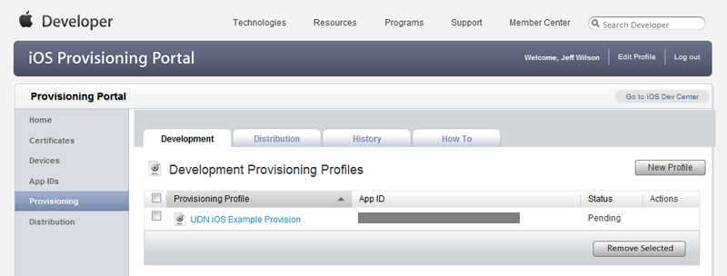
-
重新加载 Provisioning 主页的 Development 选卡将会使得未处理的profile变为 Active(激活) 状态。
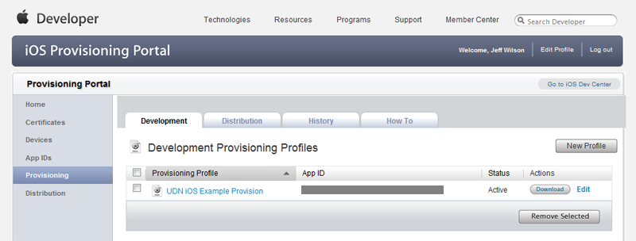
修改Development Profiles
可以在 Provisioning 部分的 Development 选卡中修改现有的development provisioning profile (开发服务提供概述)。这允许您重命名profile、选择和该profile相关联的App ID、选择要和该profile相关联的设备或者设置和profile相关联的证书。-
要想修改现有的development profile，请在profile列表点击该profile的 Edit(编辑) 链接。
 然后，点击出现的菜单中的 Modify(修改) 链接。
然后，点击出现的菜单中的 Modify(修改) 链接。
 这就将把您带到 Modify iOS Development Provisioning Profile(修改iOS开发服务提供概述) 页面。
这就将把您带到 Modify iOS Development Provisioning Profile(修改iOS开发服务提供概述) 页面。

-
修改该profile的信息：
- Profile Name(概述名称) - 用于在 iOS Provisioning Portal 中标识profile 的显示名称。
- Certificates(证书) - 选中证书旁边的复选框来将该证书和这个profile相关联。
- App ID - 从您的现有App IDs中选择一个将其和这个profile相关联。
- Devices(设备) -选中应该和这个profile相关联的所有设备旁边的复选框。
-
点击 按钮来保存对该profile的修改。这将把您带回到 Provisioning(服务提供) 主页的 Development(开发) 选卡，这里修改后的profile将显示为 Pending(未处理) 状态。
- 重新加载 Provisioning 主页的 Development 选卡将会使得未处理的profile变为 Active(激活) 状态。
发布
创建Distribution Profile
在 Distribution(发布) 选卡的 Provisioning(服务提供) 部分中可以直接新建distribution provisioning profiles(发布服务提供概述)。-
要想创建新的发布服务提供概述，点击 Provisioning(服务提供) 主页的 Distribution(发布) 选卡上的按钮。这就将把您带到 Create iOS Development Provisioning Profile(创建iOS开发服务提供概述) 页面。

-
填写profile(概述)信息：
- Distribution Method - 选择想使用的发布方法。Choose App Store(选择 App Store)是指您想通过App Store发布您的应用程序。Choose Ad Hoc意味着您讲靠自己直接把应用程序发布到设备上，比如创建内部应用程序。
- Profile Name(概述名称) - 用于在 iOS Provisioning Portal 中标识profile 的显示名称。
- Distribution Certificates - 这里应该列出您的发布证书。如果您还没有发布证书，那么请参照发布证书部分。
- App ID - 从您的现有App IDs中选择一个将其和这个profile相关联。
- Devices(设备) -选中应该和这个profile相关联的所有设备旁边的复选框。*注意:* 该项仅对Ad Hoc发布有效。

-
点击按钮来提交新的profile。这将把您带回到 Provisioning(服务提供) 主页的 Distribution(发布) 选卡，这里新的profile将显示为 Pending(未处理) 状态。

-
重新加载 Provisioning 主页的 Distribution 选卡将会使得未处理的profile变为 Active(激活) 状态。
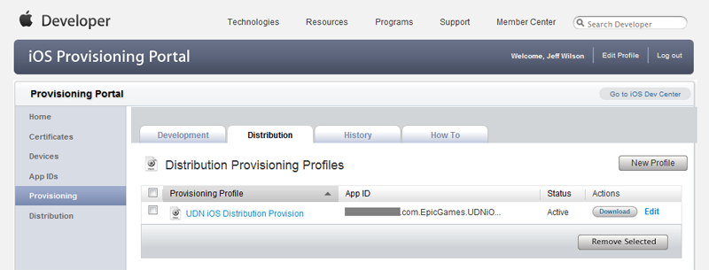
修改Distribution Profiles
可以在 Provisioning 部分的 Distribution 选卡中修改现有的distribution provisioning profile (发布服务提供概述)。这允许您选择profile的发布方法、重命名profile、选择和该prifile相关联的App ID或者选择和该profile相关联的设备。-
要想修改现有的distribution profile，请在profile列表中点击该profile的 Edit(编辑) 链接。
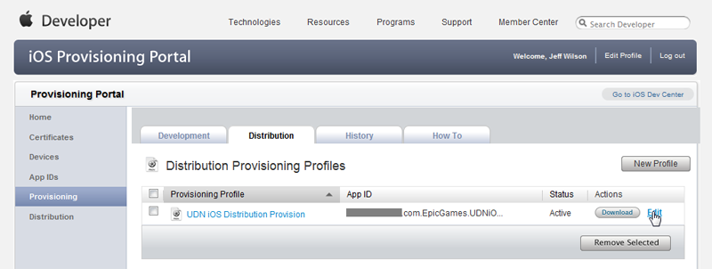
然后，点击出现的菜单中的 Modify(修改) 链接。
这就将把您带到 Modify iOS Development Provisioning Profile(修改iOS开发服务提供概述) 页面。

-
修改该profile的信息：
- Distribution Method - 选择想使用的发布方法。Choose App Store(选择 App Store)是指您想通过App Store发布您的应用程序。Choose Ad Hoc意味着您讲靠自己直接把应用程序发布到设备上，比如创建内部应用程序。
- Profile Name(概述名称) - 用于在 iOS Provisioning Portal 中标识profile 的显示名称。
- Distribution Certificates - 这里应该列出您的发布证书。如果您还没有发布证书，那么请参照发布证书部分。
- App ID - 从您的现有App IDs中选择一个将其和这个profile相关联。
- Devices(设备) -选中应该和这个profile相关联的所有设备旁边的复选框。*注意:* 该项仅对Ad Hoc发布有效。
-
点击 按钮来保存对该profile的修改。这将把您带回到 Provisioning(服务提供) 主页的 Distribution 选卡，这里修改后的profile将显示为 Pending(未处理) 状态。
- 重新加载 Provisioning 主页的 Distribution 选卡将会使得未处理的profile变为 Active(激活) 状态。